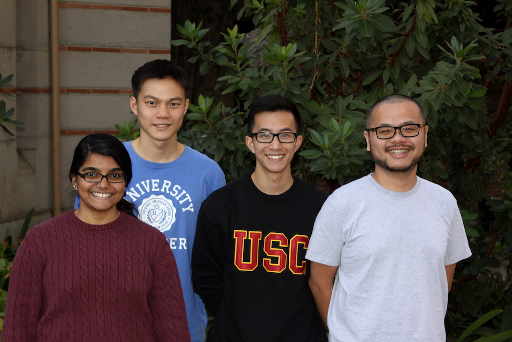

Spatial Computing
Spatial Sciences Institute, University of Southern California
who we are
projects
Geospatial Data Integration
Text Recognition in Maps
Road Vectorization from Maps
Symbol Recognition in Maps
Linking Maps to Other Data Sources
Visualizing USC Shoah Fundation VHA with Spatial Information
publications
join us

WHO WE ARE
We are a research team at Spatial Sciences Institute, University of Southern California. We develop computer algorithms and build applications to solve real world problems in spatial sciences.current

Yao-Yi Chiang
Assistant Professor (Research), USC Spatial Sciences Institute

Ishan Alok
Graduate Student, USC Computer Science

Deepika Anand
Graduate Student, USC Computer Science

Bhaskar Bandyopadhyay
Graduate Student, USC Computer Science

Weiwei Duan
Graduate Student, USC Computer Science

Abhishek Jain
Graduate Student, USC Computer Science

Manikanta Kotthapalli
Graduate Student, USC Computer Science

Sumedha Kucherlapati
Graduate Student, USC Data Informatics

Hariprabha Mallyah
Graduate Student, USC Computer Science

Nandan Nayak
Graduate Student, USC Spatial Informatics

Jakapun Tachaiya
Graduate Student, USC Data Informatics

Joanna Haoshi Wang
Undergraduate Student, USC GeoDesign

Ronald Yu
Undergraduate Student, USC Computer Science

Yuanchang Zhang
Graduate Student, USC Spatial Informatics

Ying Zhang
Associate Professor, North China Electric Power University, School of Control and Computing Engineering
affiliate USC faculty

Craig Knoblock
Director of Information Integration, USC Information Sciences Institute
Director of Information Integration, USC Information Sciences Institute
Research
Professor, USC Computer Science
alumni
2016

Vijayan Balasubramanian
Graduate Student, USC Data Informatics

Yuan Gao
Associate Professor, Department of Information and Management, Northwest University, China

Narges Honarvar Nazari
Graduate Student, USC Computer Science

Saarthak Khanna
Graduate Student, USC Data Informatics

Zexuan Luo
Graduate Student, USC Computer Science

Sanjay Singh
Graduate Student, USC Computer Science

Tian Xiang Tan
Graduate Student, USC Computer Science

Jianhua Wu
Visiting Scholar, USC Spatial Sciences Institute
2015

Robin Franke
Undergraduate Student, USC GeoDesign

Alex Chen
Undergraduate Student, USC GeoDesign
Leonard Ngo
Undergraduate Student, USC GeoDesign
Kuangyu Xiong
Undergraduate Student, USC Architecture
Yi Hou
Undergraduate Student, USC GeoDesign

Rashmina Ramachandran Menon
Graduate Student, USC Computer Science

Zebao Zhang
Visiting Scholar, USC Spatial Sciences Institute

Nilesh Gupta
Graduate Student, USC Electrical Engineering

Yamini Goyal
Graduate Student, USC Computer Science

Andrew Hsu
Palos Verdes Peninsula High School
Wilson Franca De Souza
Undergraduate Student, Humboldt State University, Environmental Resources Engineering

Yang Meng
Graduate Student, USC Data Science

Woojin Park
Visiting Scholar, USC Spatial Sciences Institute

Sima
Moghaddam
Graduate Student, USC Computer Science

Haohan Yang
Graduate Student, USC Computer Science
2014

Akshay Anand
Esri (Previously Graduate Student, USC Computer Science)

Ramtin Boustani
Graduate Student, USC Computer Science

Renuka
Fernandes
Undergraduate Student, USC Electrical Engineering

Sanjauli
Gupta
Yahoo (Previously Graduate Student, USC Computer Science)

Jizhe Zhou
Undergraduate Student, Electronics and Information Engineering, Beihang University (Beijing, China)
2013

Ketan
Akade
Yahoo (Previously Graduate Student, USC Computer Science)
Cathy Ji
Undergraduate Student, USC Computer Engineering
Parin Jogani
Ebay (Previously Graduate Student, USC Computer Science)
Shrikanth Narayanan
Graduate Student, USC Data Science
Ashish Shirode
Intel (Previously Graduate Student, USC Computer Science)
PROJECTS
Geospatial Data Integration
Data Analytics with Knowledge Graph
A domain expert can process heterogeneous data to make meaningful interpretations or predictions from the data. For example, by looking at research papers and patent records, an expert can determine the maturity of an emerging technology and predict the geographic location(s) and time (e.g., in a certain year) where and when the technology will be a success. However, this is an expert- and manual-intensive task. In this project, we are building an end-to-end system that leverages data collected from public sources to predict the (geographic) center(s) of a technology and when the center(s) will emerge. In our pilot study, we built a system to predict the future (geographic) center(s) for fuel cell technologies. The system extracts and cleanses data from public sources including research papers and patent records. After data extraction and cleansing, the system uses an ontology-based data integration method to generate knowledge graphs in the RDF (Resource Description Framework) format and enables users to switch quickly between machine learning models for predictive analytic tasks.Spatiotemporal Data Mining Using Heterogeneous Geospatial Sources
Given the various representations of geographic entities in heterogeneous data sources (e.g., a building can be a point or a polygon; building names can be store in a column called “name” or “name_eng”), a challenging problem is how to efficiently provide semantic descriptions for datasets from a large variety of sources to support machine learning and/or data mining tasks. In this joint effort with the BAE Systems, we are building an end-to-end approach that enables efficient modeling of spatiotemporal datasets from heterogeneous sources for performing analytical tasks on the modeled datasetsModeling and visualizing geospatial data: Karma

Efficient cleaning and transformation of geospatial data attributes: ArcKarma (an Esri ArcGIS plugin)

Text Recognition in Maps (OCR for Maps)
Overall approach:

Generating geonames from map images: ArcStrabo (an Esri ArcGIS plugin) (OCR for Maps)

Generating named road vector data from map images (sample results)


Road Vectorization from Maps
Overall approach:

Sample results:


Symbol Recognition in Maps [Repository]
Overall approach:
1. Take a scanned map...(here shows an USGS historical topographic map)

and a symbol example

2. Automatically identify map symbols that look like the symbol example (the blue boxes)

Linking Maps to Other Spatiotemporal Datasets
Linking Map Symbols to DBPedia:
1. Take a scanned map...

2. Automatically identify hotel symbols and link the symbol locations to DBpedia

3. Linked locations in a GIS

Linking Historical Maps to USC Shoah Foundation Visual History Archive:
Historical maps are a great source of detailed place information in the past. For example, during the World War II (WWII), the US Army Map Service (AMS) created around 40,000 maps covering a significant amount of the earth. Other map sources provide detailed historical pre- and post-WWII maps, such as the Polish mapping company, Centrum Kartografii, which offers pre-WWII maps of Poland with a comprehensive list of place names including towns, manufacturing plants, monuments, etc. These historical maps can be found in either paper or scanned (digital) format in map archives such as the David Rumsey Map Collection or libraries including the USC Libraries, UCLA Map Libraries, Western Michigan Libraries, and the Library of Congress. The problem we are addressing here is how to systematically and effectively link places mentioned in the VHA collection to relevant historical maps and other historical materials.
Created by Andrew Hsu

Created by Robin Franke

Created by Alex Chen
Visualzing Climate Change with Maps:

Climate Change, Created by Hariprabha Mallyah

Ocean Acidification, Created by Nandan Nayak

Climate Refugee, Created by Joanna Wang
PUBLICATION
Journal Articles Peer-Reviewed Conference/Workshop ArticlesJOIN US
Hacking the SPACE!
We are always looking for students and summer interns to work on interesting problems in spatial science, data science, computer science. Please feel free to send us an email if you are interested to join the team.
USC Graduate Students
Credit or non-credit (Computer Science, Data Informatics, or GIST studetns), we simply ask you to put down at least 10 hours a week so that you will have enough time to finish a cool project. You can also take the geospatial data integration course from CS department to learn more about our research.USC Undergraduate Students
We love to work with undergraduate students. Join us and gain experience in research and build some awesome applications!Visitors and Students from Other Schools (including international scholars and students)
We welcome visitors and students from other schools. We had great experience with international summer interns in the past. Come work with us in Los Angeles and enjoy the nice weather!Potential Research Topics
Integrating, modeling, visualizing, and mining spatiotemporal information from heterogeneous data sourcesWe are building automatic techniques to identify spatiotemporal patterns from heterogeneous data sources. Check the projects under Geospatial Data Integration for more information.
Type of position: directed research, potential PhD students
Requirement: excellent programming skills in Python, familiarity with machine learning and data mining, familiarity with Elasticsearch, Spark, spatial databases is a plus.
Exploiting online data sources to build accurate gazetteers from map scans
We are building automatic techniques to convert text labels in scanned maps into machine-readable text. Our current system utilizes Tesseract for the task of optical character recognition (OCR), and the results could contain missing or incorrectly recognized characters. We are investigating scalable, accurate methods to improve the character recognition results using existing geographic names. The idea is to automatically compare the recognition results with existing geographic names and find the best match efficiently. These geographic names can come from public online sources such as OpenStreetMaps and DBPedia.
Type of position: directed research, potential PhD students
Requirement: excellent programming skills in C#, familiarity with fuzzy string comparison algorithms, familiarity with Elasticsearch and/or image processing is a plus.
Building an accurate character recognition system
Optical character recognition (OCR) software such as the open source Tesseract uses a combination of techniques in machine learning, pattern recognition, and image processing. We are using Tesseract to convert text labels in hundreds of historical map scans into machine-readable text. We are investigating the best practice to train the underlying algorithms of Tesseract for efficiently recognizing specific font types and document layout.
Type of position: directed research, potential PhD students
Requirement: excellent programming skills in C#, familiarity with image processing, familiarity with pattern recognition and/or machine learning is a big plus.
Symbol recognition from map scans
We are investigating methods to automatically extract locations of cartographic symbols from map images.
Type of position: directed research, potential PhD students
Requirement: excellent programming skills in C#, familiarity with image processing, familiarity with pattern recognition and/or machine learning is a big plus.
Image segmentation
Grouping similar colors in an image is very often the first step for object recognition from images. Existing image methods applied on document images do not always result in a clear representation of text in images. We are investigating efficient and effective methods that utilize both color and spatial distances between pixels to separate text from other object in a document image.
Type of position: directed research, potential PhD students
Requirement: excellent programming skills in C#, familiarity with image processing and machine learning, familiarity with computer vision is a big plus.